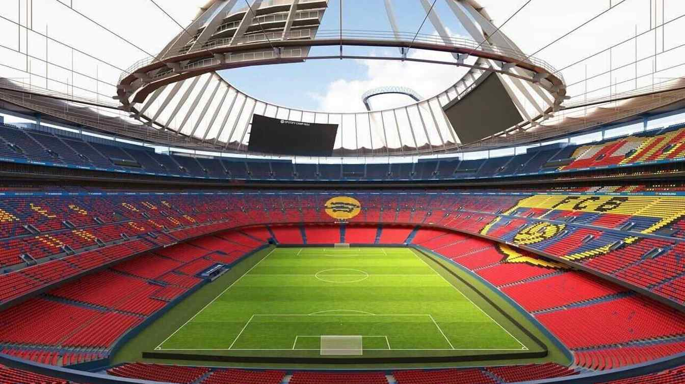

Stadion Camp Nou
Camp Nou, największy stadion w Europie, jest domem FC Barcelony od 1957 roku. Miejsce to pomieści ponad 99 tysięcy kibiców i jest jednym z najbardziej znanych obiektów piłkarskich na świecie.
Kliknij na zdjęcie, aby zobaczyć lokalizację Camp Nou na Google Maps.